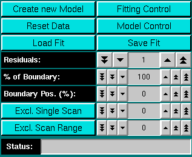

|
Manual
|
Finite Element Whole Boundary Fitting Data Analysis:
(Nonlinear least squares by automatic differentiation)
The Finite Element Whole Boundary Fitting method is based on the numerical
solution of the Lamm equation, which is achieved through discretization
of the two major variables, radius and scan time, into finite elements.
As such, it is possible to accurately model not only the boundary, but also
the boundary conditions, such as meniscus and cell bottom. The main purpose
of using the Finite Element method is for the modeling of well-defined
homogeneous or paucidisperse solutions. This includes single and dual-component
systems, simple self-associating systems and isomerizing systems. Modeling
with the Finite Element method will result in both s and D,
which can be used to calculate f and either molecular weight or
the partial specific volume, provided one or the other is known
a priori.
Fitting experimental data to a model involves a nonlinear least squares
minimization algorithm. This finite element fitting module utilizes the
Automatic Differentiation method (AD). More information about this method
can be found
here. With the help of the automatic differentiation library "ADOLC",
this method generates all entries of the Jacobian
matrix using the chainrule to arrive at an exact derivative, accurate to
within machine error and comparable to an analytical derivative. Such
a fitting algorithm tends to converge within just a few iterations.
The disadvantage of this method is that it needs to generate very large
temporary files ("tapes") of the derivative calculations, which requires
fast memory input/output and large storage.
You start the Finite Element data analysis by clicking on "
Finite Element" in the Velocity sub-menu of the main menu. The main
Finite Element Data analysis window will appear.
The first step in the analysis requires that you load an
UltraScan dataset that has previously been edited with
the UltraScan editing module. UltraScan
sedimentation velocity datasets always have the suffix ".us.v". Click on
the Load Dataset button in the
left upper corner of the control panel. Simply select the desired run from
the selection of available runs in the dataset
loading dialog. Once loaded, the first available dataset of the
selected run will be displayed in the
data window on the lower right panel. To start the analysis, a model
has to be defined. Click on Create a new
Model to define a model. To
assist you in defining the proper model it is strongly
recommended to analyze the data first by the van Holde
- Weischet analysis method. This method will allow you to identify
very accurately the presence of multiple components and provide you
with reasonable starting guesses for your model. After defining the
model, you can start the fitting process by clicking on the button Fitting Control. During fitting, the
program will graphically show the converging fit by displaying the
residuals and the experimental data overlaid with the fit. After
fitting is complete, the analysis will be shown in the main window, with the first five residuals shown
in the analysis window, and the first five scans overlayed in red with
the finite element solution. The fitting control
window will indicate the final variance of the last iteration. Next,
you can print out the residuals and overlayed data by clicking on the Print Data button, export the
result files (Save Data, see File
Format Information), or view the Analysis
Result Report.
Analysis Functions:
 |
Click on these buttons to control the time derivative analysis.
-
Load Data: Load edited data sets (with the *.us.v suffix). A
file dialogue will allow you to select a
previously edited and saved velocity experiment. If the data was edited
with a previous version of UltraScan, an error
message will be displayed.
-
Run Details: View the diagnostic details
for a particular run.
-
Monte Carlo: Perform Finite Element
Monte Carlo statistics on the analyzed data.
Due to the high computational needs of this function, this feature
should only be used with the Beowulf/SMP versions of
UltraScan. This feature is disabled until a converged fit
has been obtained or loaded with Load Fit.
-
Save Data: Write out a copy of all results to an ASCII formatted
data file suitable for import into a spreadsheet plotting program. See
"File Structures and Formats" for details.
Note: These files are overwritten each time this button is clicked. Only
the last version of the analysis will be saved!
-
Print Data: Load the printer control
panel for printing of plot
graphics
-
View Data Report: See the data report for the last analysis setting.
Note: This file is re-written each time it is accessed. Only the current
analysis result is available. Click here
for a sample of a finite element data report
-
Help: This help file
-
Close: Close the Finite Element analysis window.
|
Run Information:
 |
-
Run ID: The name of the run given during editing
-
Temperature: The average temperature calculated from the entire run
-
Available Cells: The numbers the cells that contain analyzable data
Clicking on a cell and wavelength selection will bring up the cell contents
description for that cell and wavelength. Scroll through this list to bring
up information for cells > 3. If there is no data available for the selected
cell, the program will list "No Data available". Selecting a cell/wavelength
combination will automatically bring up the corresponding dataset and present
the raw data in the lower plot window. |
Experimental Parameters:
 |
Here you can enter the corrections for density and viscosity of
your buffer. When you change the information in these fields, the
program will automatically update the analysis to correct the S-value
according to the specified buffer conditions. If you change the settings
for density and viscosity after you finished a calculation, be sure to
click on the Update for 20oC,W button in the
Model Control window to make sure that all
parameters are recalculated for the updated buffer settings.
-
Density: Click to calculate the density
based on the composition of your buffer.
-
Viscosity: Click to calculate the viscosity
based on the composition of your buffer.
|
Analysis Controls:
|  |
- Create new Model: This button allows you to
create a new model to be fitted to your data with the finite element
analysis
-
Reset Data - use this button to reset the default settings for the
analysis.
-
Load Fit: With this function you can recall a previously saved fit
(saved with "Save Fit" - see below). It will recall the exact
memory state when the fit was saved, including vbar, density and viscosity
settings, residuals, raw data and data details. The only requirement is
that the file containing the edited data on which the fit is based is
available in the "Results Directory" set in the
configuration.
-
Fitting Control: This button will recall the fitting control panel. Before pressing
this button, a valid model has to be defined.
-
Model Control: This button will recall the model control panel. Before pressing
this button, a valid model has to be defined.
-
Save Fit: Use this button to save a converged fit (either for later
review or for later Monte Carlo Analysis). The routine will save all pertinent
data including the fitted data, the residuals, the parameter values, the model,
the hydrodynamic settings (vbar, density, viscosity), data range and excluded
scans.
-
Residuals: Once the fitting process has completed, this counter
allows you to display the residuals of the fit in groups of 5 scans. Use the
counters to select different groups of residuals. The single arrow will
move in single steps (5 scans at a time), while the double arrow will
advance the groups by 10 with each click (jumps 50 scans).
is feature to smooth the experimental data.
-
% of Boundary: This setting allows you to select only a portion of
the boundary to be fitted to a finite element solution.
-
Boundary Position (%): Use this counter to move the selected boundary
portion up and down between the baseline absorbance and the plateau absorbance.
-
Exlude Single Scan: When setting this counter to a non-zero value,
the respective scan will be highlighted in red. Clicking on "Excl. Single
Scan" while a scan is highlighted in red will delete this scan from the
analysis. Deleting scans from the analysis is irreversible and can only
be reset by clicking on the "Reset" button or by reloading the data.
-
Exclude Scan Range: Same as "Exclude Single Scan", except
for multiple scans. To use this feature, select first the start scan of
the range by using "Exclude Single Scan", then complete the scan
range by using "Exclude Scan Range". To be excluded scans are
highlighted in red and will be deleted from the dataset when clicking
on "Exclude Scan Range".
-
Status: The status bar is reserved for the Beowulf/SMP version of
UltraScan to monitor the progress of the Monte Carlo fitting statistics
and is without effect for all other UltraScan releases.
|
www contact: Borries Demeler
This document is part of the UltraScan Software Documentation
distribution.
Copyright © notice.
The latest version of this document can always be found at:
http://www.ultrascan.uthscsa.edu
Last modified on January 12, 2003.
{kind=link}
{kind=link}
{kind=link}
{kind=link}
{kind=link}
{kind=link}
{kind=link}
{kind=link}
{kind=link}
{kind=link}